Round Icons
Graphic Design
Полезни приложения
Ех, какво бихме правили без тези приложения? Да, говорим за т. нар. „полезни“ приложения. Тук ще ви видите освен познатите ви app-ове, без които не можете да си представите ежедневието, така и такива, които ще ви улеснят значително при изпълняване на рутинните задължения и ще ви помагат във всичко с което се захванете, защото те са хиляди – за всеки и за всичко.
Portal - Wifi file transfers (Android)
От Pushbullet
Качването на снимки, видео и други файлове от компютъра в телефона трябва да бъде бързо и безболезнено. Portal от Pushbullet помага в това, като прави процеса изключително лесен и интуитивен. Просто отворете приложението на смартфона си и след това отворете сайта portal.pushbullet.com на компютъра си и сте готови за действие. Файловете ще се прехвърлят през вашата WiFi мрежа, което означава, че те няма да източат бързия пакет с мобилни данни. Това означава също, че файловете ще се прехвърлят много по-бързо (дори и ако те са над 1 GB по размер). Може да прехвърляте отделни файлове, множество файлове или цели папки наведнъж. Ще преглеждате, отваряте или споделяте файлове много по-лесно. Прехвърлените снимки автоматично ще отидат в основната галерия със снимки в телефона ви. Portal работи на устройства с Android 5.0 (Lollipop) или по-нова. С Portal можете да записвате файлове и на вашата сменяема SD карта.
Цена: Безплатно
Изтегли приложението от Google Play Store
Харесай Добави в любими
Flotsm (iOS)
От Flotsm Limited
Добре дошли във Flotsm, прост, забавен, но и мощен начин да вземате по-добри решения. Помолете анонимно потребителите във Flotsm за помощ. Задайте им въпрос и получете множество гледни точки и съвети от общността, което би ви помогнало да направите един по-обективен избор. Всеки потребител на Flotsm е анонимен, така че няма ограничения за обществени и професионални персони. Всеки потребител на Flotsm е равен, свободен да задава и отговаря на неограничен брой въпроси.
Цена: Безплатно
Изтегли приложението от App Store
Харесай Добави в любими
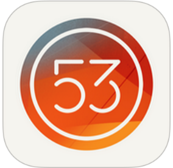
Paper - Notes, Photo Annotation, and Sketches (iOS)
От FiftyThree, Inc.
Paper е най-добрият начин да уловите порива на вдъхновението си и да го превърнете в бележки, снимки и скици. Сега приложението с ненадмината бързина и лекота е налично и за iPhone.
Цена: Безплатно
Изтегли приложението от App Store
Харесай Добави в любими
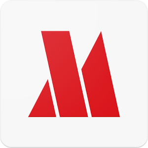
Opera Max – диспечер за трафик (Android)
От Opera Software ASA
Opera Max пести трафик, увеличава плана ви с данни и ви предоставя несравним контрол върху потреблението на данни на телефона ви. Това приложение за управление и икономия на данни намалява потреблението на трафик в 3G/4G/LTE и Wi-Fi мрежи с до 50%. Пестете данни, като компресирате видеоклипове, снимки и медийно съдържание в любимите си приложения и уебсайтове в мобилни и Wi-Fi мрежи – без забележима загуба на качество. Opera Max също така ви помага да удължите живота на батерията и плана си с данни, като ви позволява да блокирате приложенията, които работят във фонов режим без знанието ви. Освен това можете да я използвате като Wi-Fi диспечер за по-добър контрол върху работата на приложенията ви във фонов режим, когато сте свързани към Wi-Fi мрежа.
Цена: Безплатно
Изтегли приложението от >Google Play Store
Харесай Добави в любими
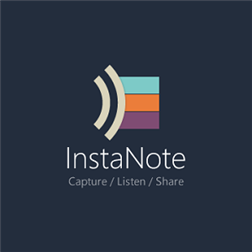
InstaNote (Windows)
От Microsoft Corporation
InstaNote е проект на Microsoft Garage, приложение за бележки, което е изключително лесно за ползване само с едно докосване. С InstaNote трудно ще пропуснете текущ разговор или нещо важно, което сте видели на момента. С едно докосване InstaNote ви помага да записвате аудио, за да го чуете, когато е възможно.
Цена: Безплатно
Изтегли приложението от Windows Store
Харесай Добави в любими
CLIP+ (iOS)
От Whisk
Сега можете да получите достъп до всеки ваш копиран текст от всяко приложение по всяко време. Никога не губете нещо отново! CLIP+ ще ви улесни в менажирането на всички копирани неща на вашето iOS устройство, плюс съвместимост с Apple Watch. CLIP+ автоматично разпознава различни видове съдържание, като например телефонен номер, URL, имейл адрес и т.н.
Цена: $2,99
Изтегли приложението от App Store
Харесай Добави в любими
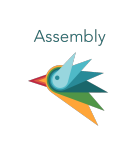
Assembly - Graphic design for everyone (iOS)
От Pixite LLC
Assembly е най-лесният и най-мощен инструмент за дизайн в App Store. Създавайте всичко, което може да си представите - красиви лога, символи, икони и илюстративни сцени веднага. Инструментите са с професионално качество, събрани в един прост пакет, който всеки може използва.
Цена: Безплатно
Изтегли приложението от App Store
Харесай Добави в любими
BlockBear: Block Ads and Protect Your Privacy With a Bear (iOS)
От TunnelBear, Inc.
BlockBear е много просто и очарователно приложение, което блокира рекламите и защитава вашата поверителност в Safari. BlockBear блокира изскачащи прозорци, текстови реклами, банери, за да ви осигури едно по-бързо и приятно сърфиране на вашето iOS устройство. Предпазете вашия личен живот от широко разпространеното онлайн проследяване - бисквитки, скриптове и т.н. Имате възможност да добавите любими уеб сайтове в белия списък.
Цена: Безплатно
Изтегли приложението от App Store
Харесай Добави в любими

#1 ToolKit (Windows)
От Ccool Media
#1 ToolKit е пълен пакет от приложения, които включват Pro комплекти с общо 16 инструмента. С една дума All-In-One. Комплект 1: линия, компас, транспортир, нивелир. Комплект 2: фенер, огледало, лупа. Комплект 3: конвертор на мерни единици. Комплект 4: детектор за шум, диктофон. Комплект 5: таймер, хронометър, световен часовник...
Цена: Безплатно
Изтегли приложението от Windows Store
Харесай Добави в любими
АБВ Поща (Android)
От „Нет Инфо” АД
Мобилното приложението на АБВ Поща ви дава лесен и бърз достъп до кореспонденцията ви. Както и при десктоп версията, така и с мобилното приложение можете да проверявате и да четете новите си писма, да пишете мейли и да сте в постоянна връзка с вашите приятели и бизнес партньори.
Цена: Безплатно
Изтегли приложението от Google Play Store
Харесай Добави в любими

Добра програма (Windows)
От Raximus
Програма/разписание на учебните часове, комбинирана с календар и напомняния. Перфектна за ученици и студенти. Синхронизация с приложението в Windows 8 със същото име.
Цена: Безплатно (Предлага покупки в приложението)
Изтегли приложението от Windows Store
Харесай Добави в любими
Store For Android Wear (Android)
От Wearable Software
С Android Wear Center можете да получите всички приложения, игри, новини и лица за часовника ви с Android Wear на едно място. Ако сте имали проблеми с намирането на приложения за вашия умен часовник с Android Wear, това приложение ще ви помогне да се ориентирате. То е просто, бързо и лесно за използване. Открийте най-високо оценените, чисто новите и наложените приложения лесно. Използвайте и механизми за филтриране. Изберете от списък с над 2200 приложения за вашия Android Wear умен часовник. Store For Android Wear е напълно безплатно приложение и няма досадни реклами.
Цена: Безплатно
Изтегли приложението от Google Play Store
Харесай Добави в любими
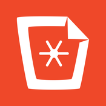
Mustbin - Your Private Camera (Android, iOS)
От Mustbin Inc.
Mustbin не прилича на никое друго приложение за снимки и съобщения. Снимките, които ще правите с камерата на Mustbin, не се показват във вашия фотоалбум, т.е. вие няма да се притеснявате, че някой случайно може да попадне на ваши интимни снимки. Снимките в Mustbin се запазват в облака и вие винаги ще имате достъп до тях. Ако искате да споделите снимки с приятелите и семейството си, ще можете да изпращате съобщения безплатно. С Mustbin вие винаги ще контролирате вашите снимки. Вашият Mustbin е защитен с PIN код и супер силно криптиране.
Цена: Безплатно (Предлага покупки в приложението)
Изтегли приложението от App Store, Google Play Store
Харесай Добави в любими
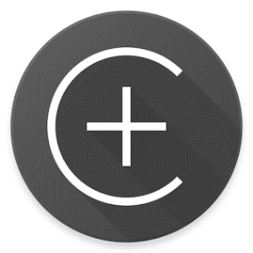
Centrallo – Lists and Notes (Android, iOS)
От Centrallo
Събирайте, организирайте, приоритизирайте, споделяйте и публикувайте съдържанието, което има значение за вас. Centrallo е мощен нов мултиплатформен инструмент за повишаване на производителността. Той ще ви помогне да централизирате живота си. Създавайте неограничен брой списъци, съдържащи снимки, видео, гласови бележки и линкове. Споделете ги с лични и професионални мрежи. Преглеждайте приоритетите с едно докосване на екрана и се фокусирайте върху най-важното.
Цена: Безплатно (Предлага покупки в приложението)
Изтегли приложението от App Store, Google Play Store
Харесай Добави в любими
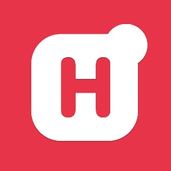
Hooks - Alerts for Everything (Android, iOS)
От Hooks
Hooks е приложение, което ви изпраща персонализирани известия за всичко, от което се интересувате. С него можете да търсите над 1млн. известия или да създадете персонализирани такива, като изберете един от 100-те(+) канала. Всяка седмица се включват нови канали. Свалете Hooks сега и никога няма да пропуснете нещо отново.
Цена: Безплатно (Предлага покупки в приложението)
Изтегли приложението от App Store, Google Play Store
Харесай Добави в любими
Forward - social donations (iOS)
От Commanigy
Forward приложението е създадено като място, в което хората чрез дарениямогат да дават своята помощ на други хора в беда. Можете да дарявате пари, вещи и да следите пътя на даренията. Лесно ще откриете заявки за дарения на локално ниво. Имате възможност да проследявате пътя на дарението ви от началото до края.
Цена: Безплатно (Предлага покупки в приложението)
Изтегли приложението от App Store
Харесай Добави в любими
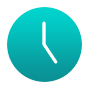
Dwindle: Minimalistic Countdown (iOS)
От TwoBros
Dwindle е брояч, който ще ви помогне да следите колко време остава до зададено от вас събитие. То има красив, минималистичен и опростен потребителски интерфейс и възможност за избор от шест ярки цвята. Споделете вашите обратни отброявания чрез електронна поща, SMS, Twitter или Facebook.
Цена: Безплатно (Предлага покупки в приложението)
Изтегли приложението от App Store
Харесай Добави в любими
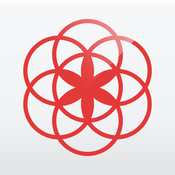
Clue - Period Tracker (Android, iOS)
От BioWink
Clue е приложение за дамите. То прогнозира датата за следващата ви менструация, PMS и дните, в които е повече или по-малко вероятно да забременеете. Възможно ли е вашите настроения да са свързани с вашия цикъл? Просто инсталирайте Clue и то ще се погрижи за всичко. Това е тракерът, който винаги сте чакали: той е мощен, точен и не е розов.
Цена: Безплатно
Изтегли приложението от App Store, Google Play Store
Харесай Добави в любими
Madefire (Android, iOS, Windows)
От Madefire
С официалното си приложение компанията Madefire доставя своята услуга, съдържаща богат каталог от цифрови комикси и Motion Books. То е мултиплатформено и с него може да четете комикси и книги с добавена интерактивност, звук и движение. Има и седмични промоции, включващи безплатни комикси всеки петък и актуални версии за нови комикси всяка сряда.
Цена: Безплатно (Предлага покупки в приложението)
Изтегли приложението от App Store, Google Play Store, Windows Store
Харесай Добави в любими
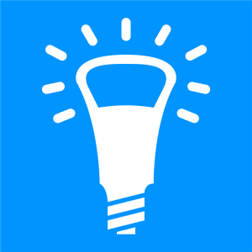
Lux-o-Meter (Windows)
От Martin Suchan
Използвайте телефона си като истински луксметър (светломер) безплатно! Lux-о-Meter е първото Windows Phone 8.1 приложение за измерване на реалната осветеност. Всичко става с помощта на вградения датчик за осветеност. Приложението е безплатно, но ако ви харесва, можете да го надградите до Pro версия. Заради липсващ светлинен сензор Lux-o-Meter не работи на: Nokia Lumia 530, 630, 635, 636.
Цена: Безплатно (Предлага покупки в приложението)
Изтегли приложението от Windows Store
Харесай Добави в любими
Wine Advisor Scanner (iOS)
От WineAdvisor
Открийте, изберете, споделете и поръчайте най-добрите вина с Wine Advisor Scanner. Идентифицирайте всяка бутилка вино чрез снимка. Споделете вашите вина с приятелите си. Поставете оценка и коментар за всяко вино, което сте опитали. Получавайте персонализирани препоръки. Купувайте най-добрите вина и шампанско.
Цена: Безплатно
Изтегли приложението от App Store
Харесай Добави в любими
Neybers - Play with Interior Design (iOS)
От amagumo games
Neybers е нов и лесен начин да си играете с интериорния дизайн. Независимо дали искате да създадете дом мечта, фотосесия за списание, или искате да разкажете една история, Neybers ви дава възможност да украсявате стаите с помощта на широка гама от модерни и стилни продукти от реални търговски марки и дизайнери.
Цена: Безплатно (Предлага покупки в приложението)
Изтегли приложението от App Store
Харесай Добави в любими
Perfect TimeKit (Windows)
От Perfect Thumb
Perfect TimeKit за Windows Phone е перфектната комбинация от аларма + таймер + хронометър + световен часовник в уникален прост и изчистен интерфейс.
- Задавайте аларми и таймери
- Хронометърът позволява на потребителите да излязат от приложението, след като са стартирали един или няколко таймера.
- Споделяйте времето на вашите обиколки
- Поставяйте множество живи плочки със световни часовници
- Вижте часовите зони с карта на света.
Цена: Безплатно
Изтегли приложението от Windows Store
Харесай Добави в любими
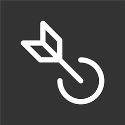
BitTorrent Shoot (Android, iOS, Windows)
От BitTorrent, Inc.
Shoot прави лесно изпращането на голяма партида от снимки или голям видео файл директно от вашето устройство до приятелите ви, независимо дали те използват Android, iOS или Windows Phone устройство. BitTorrent Shoot просто работи. Shoot използва peer-to-peer технологията BitTorrent Sync, така че големите файлове не са проблем. Файловете се движат директно между хората, без да минават през облака, т.е. данните ви ще останат изцяло лични. Shoot е страхотно, когато сте на концерт с приятели, на почивка със семейството си или на рожден ден. С него ще споделяте спомените си бързо и лесно. Три лесни стъпки, за да използвате Shoot: Отворете приложението и натиснете "Изпрати", за да изберете снимки и видео от вашето устройство.
Цена: Безплатно (Предлага покупки в приложението)
Изтегли приложението от App Store, Google Play Store, Windows Store
Харесай Добави в любими
CloudMesh (Windows)
От ImaginationOverflow
CloudMesh е приложение, с което можете да управлявате всичките си облачни услуги и локални файлове. В момента приложението поддържа: Dropbox, Box, GoogleDrive, MeoCloud, Onedrive, Mega, Copy.com, 4Shared, 4Sync, MediaFire, плюс още нови скоро. Приложението ви позволява да разглеждате, копирате, премествате, изтривате, споделяте, изтегляте, качвате, търсите, синхронизирате, следите всички ваши данни и папки от поддържаните облачни услуги. Може да отваряте файлове, използвайки CloudMesh дори и от други приложения. Освен че ви позволява да ползвате вашите облачни данни, вие можете да използвате и вашите локални файлове. Може да имате няколко акаунта едновременно на една и съща облачна услуга и да търсите измежду тях.
Цена: Безплатно
Изтегли приложението от Windows Store
Харесай Добави в любими
Hound Beta - Voice Search+ (Android)
От SoundHound Inc.
Hound е гласов асистент, който разбира това, което търсите или се опитвате да направите. Това е най-бързият и лесен начин да получите информация, развлекателни и комуникационни услуги. Hound е създадено да улесни живота ви. Ако живеете в САЩ, ще можете да свалите този гласов асистент директно от Google Play Store, но ако не е така, сме добавили връзка към APK файла за инсталация. След инсталацията Hound ще ви поиска активационен код, който може да получите, като въведете имейл адреса си в съответното поле. Кодът ще пристигне в рамките на два дни и след това ще сте свободни да използвате услугата. Hound е в Beta версия.
Цена: Безплатно (Предлага покупки в приложението)
Изтегли приложението от Google Play Store
Харесай Добави в любими

10Calc (Windows)
От Prajjwal
10Calc е елегантен, бърз, лек и мощен калкулатор за Windows Phone. Той ще ви предложи множество полезни функции, включително конвертор на мерни единици, теми, функция за копиране, история на калкулациите, бърз калкулатор за програмисти, интелигентен калкулатор за поделяне на сметки + изчисляване на бакшиши, калкулатор за ипотеки и заеми.
Цена: Безплатно (Предлага покупки в приложението)
Изтегли приложението от Windows Store
Харесай Добави в любими
Artsy - The art world in your pocket (iOS)
От Art.sy Inc.
Artsy поставя света на изкуството в джоба ви! Събирайте, споделяйте и се запознайте с повече от 300 хиляди произведения на изкуството с висока разделителна способност, които се актуализират ежедневно. Вижте произведения на изкуството от водещи съвременни арт галерии, панаири, както и музеи от различни краища на света. От Monet и Warhol до Марина Абрамович, Джеф Кунс, Ед Ръша и Синди Шърман, Artsy обхваща множество стари и нови топ артисти. Вижте творбите, висящи по стените в Гугенхайм, SFMOMA, Британския музей, галерия Gagosian, White Cube и над 600 други в 50 държави, всички на едно място.
Цена: Безплатно
Изтегли приложението от App Store
Харесай Добави в любими
- Последно обновени: Февруари 2016
- Категория: Приложения за снимки и фотография